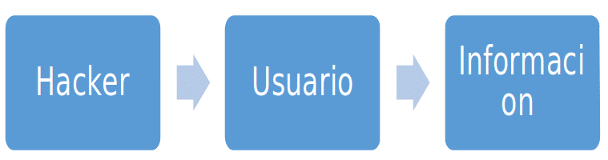
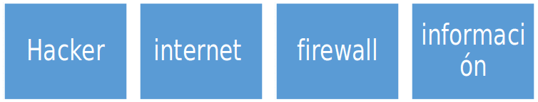
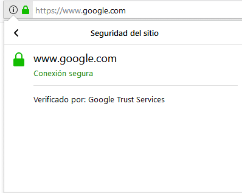
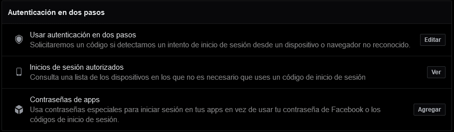

En la actualidad, la gran mayoría de ataques cibernéticos no se deben a que haya fallos en el software de un dispositivo, sino que hay un factor que hace que sea más fácil entrar en sistemas y obtener información sensible sobre usuarios y organizaciones. Este factor es el ser humano, ya que todos podemos ser manipulados por otra persona para facilitarle información que no deberíamos facilitar. Esta técnica de manipulación se denomina Ingeniería Social.
¿Qué es la Ingeniería Social?
Es una técnica de hacking muy utilizada en los últimos tiempos que consiste en manipular a una persona a través de métodos psicológicos y de habilidades sociales con el fin de obtener información sensible del objetivo.
¿Por qué se utiliza esta técnica?
Podemos clasificar la informática en varios puntos: Internet, Usuario, Software, Hardware e Inteligencia Artificial. El usuario es el eslabón más débil de esta clasificación porque, al fin y al cabo, no somos máquinas y podemos cometer errores; así es más fácil obtener información que intentando penetrar un sistema.


Como se observa en los ejemplos, el recorrido mediante ingeniería social es más rápido y sencillo. Por esta razón, esta técnica está teniendo mucho éxito en el mundo del hacking.
Tipos de ataques
- Phishing: se basa en mandar correos electrónicos falsos o mensajes de texto masivos con el fin de que un usuario clique en el enlace para robar información confidencial.
- Spear-Phishing: similar al anterior, solo que en este tipo de ataque el correo o SMS se redacta exclusivamente para un usuario y no es masivo.
- Cara a cara: técnica que requiere de una persona con grandes habilidades sociales, pues debe hablar con la víctima en persona para que le facilite información personal o sobre su empresa.
- Shoulder Surfing: el ciberdelincuente literalmente mira por encima del hombro para intentar observar el PIN de desbloqueo, algún usuario y contraseña, etc.
- Baiting: consiste en infectar una memoria USB para que el usuario la utilice y así conseguir infectar su ordenador.
- Dumpster Diving: se da cuando una empresa o usuario arroja a la basura documentos con información sensible, y el hacker busca esos documentos para sacar la mayor información posible.
- Tailgating: consiste en evadir controles de acceso a una empresa sin autorización.
- Pretexting: consiste en crear un escenario real y creíble en el que el usuario a hackear le dé acceso a su ordenador o espacio de trabajo con el fin de instalarle malware o robarle información.
- Redes sociales: los usuarios publican muchísima información en redes sociales (nombre, apellidos, dirección postal, correo electrónico, hobbies…) que los ciberdelincuentes utilizan para, por ejemplo, realizar un Spear-Phishing.
- Vishing: trata de hacer llamadas falsas simulando ser bancos o empresas de servicios para intentar robar información personal.
Medidas para intentar protegernos
- Verificar el nombre de dominio: en las técnicas de Phishing normalmente dentro del correo o SMS se incluye un enlace que redirigirá a la supuesta página legítima. Debemos comprobar de dónde es ese dominio, haciendo clic en el candado HTTPS y viendo el certificado para saber qué entidad lo recibió.
- Verificación en dos pasos: casi todas las páginas y redes sociales ofrecen el servicio de verificación en dos pasos, que consiste en tener un PIN o código aparte de la contraseña. Así, si un hacker consigue nuestra contraseña, no podrá acceder sin el PIN.

- No utilizar la misma contraseña: tener contraseñas distintas en todas las plataformas para que, si nos roban una, solo puedan acceder a esa plataforma y no a todas.
- Cuidado con las credenciales: evitar ingresar nuestras credenciales en un lugar público donde alguien pueda vernos.
